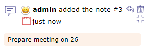
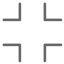

Activity Stream¶
The Activity stream allows you to display certain information about each of the elements of ProjeQtOr.
It is a kind of light history which allows you to quickly see the information of creation, deletion, changes of state of the element or the comments left by users according to their right of visibility.
Task list zone v9¶
The screen dedicated to the Activity Stream allows you to view all the feeds.
Filter system
Filter system¶
This filter allows you to restrict the display by …
Type of element
Its id
Author
Team
Periods
Show the closed items
Show only notes
You can also select the amount of information to display and restrict the list to the screen.
Elements displayed
We can see on this summary several elements:
The element and its ID
The name given to this element
The creator of change
The operation that was performed
The date and the hour of the change
Any notes related to the item
Activity stream line¶
The impacted elements are all clickable.
Notes
In the case of notes, the comment is displayed alone.
You can view notes in discussion mode if you filter the stream activity screen by author.
This allows you to escalate an entire discussion.
Activity Stream on element screen
You can view the Activity Stream for each element on the screen of the latter.
Activity stream on the screen of a Project element¶
The items displayed depend on your visibility rights.
Activity stream zone
Activity stream information
 Activity stream details¶
In the activity stream area you can view the same information as on the dedicated screen.
The author of the information relayed with his profile icon
The type of information displayed: creation, deletion, change of state or comments
The date and time of the modification
Add a note
You can add a note simply by clicking in the text box at the bottom of the activity stream area.
By default, your note is visible to all users assigned to the project linked to the item.
Click on
to share it in public (project team: resources allocated to the project)
Click on
to share the note only with your team
Show/Hide notes
Likewise, it is possible to view the notes directly by using the following buttons
Click on  to hide note comment.
Click on
to display note comment.
By default, you will see all visible notes for each item.
Click on Show only notes on activity feed to display only notes type information.


{kind=link}
{kind=link}
{kind=link}
{kind=link}
{kind=link}
{kind=link}
{kind=link}
Global view¶
Global view screen¶
The “Global view” screen lists all the main objects created during a project. This allows you to quickly search through all types of items available.
You can also choose to display only certain items through the list to display
Display one or more items¶